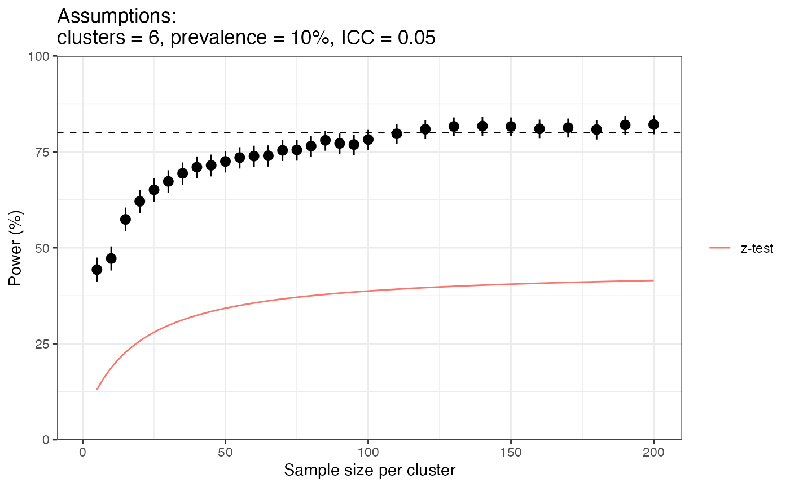

vignettes/rationale8_power.Rmd
rationale8_power.RmdThe power of a hypothesis test is intrinsically linked to the method we plan to use in our statistical analysis. We have found that if we plan to conduct a z-test on our data then, for the parameter values described in the 2020 master protocol, we will need 1126 samples. But what if we change our analysis plan to the Bayesian model in DRpower? Can we calculate power under this new approach?
The answer is both yes and no. We cannot produce a neat formula for the power as we could for the z-test as this Bayesian model is simply too involved. We can, however, estimate the power by simulation. The approach is:
One major advantage of the empirical power method is that it uses the exact analysis approach that we will use on our real data, meaning there are no approximations or fudging over uncertainty. The main downsides of this approach are; 1) it is based on a random sample, meaning power is only estimated and not calculated exactly, 2) it can take a long time to estimate if the analysis step itself is slow. These issues are mitigated to some extent in DRpower by running a wide range of parameter values on the Imperial College London Department of Infectious Disease Epidemiology computer cluster. The results are made available with the DRpower package, one such set of results is shown below:

There is some random noise in this plot, but the overall trend is clear. Power increases quickly at first and then plateaus out for larger sample sizes. Power reaches 80% for the DRpower method at around 110 samples per cluster. In contrast, the z-test method never reaches the 80% power level.
Why does the DRpower model have power so much higher than the z-test? This is not straightforward to answer, as the two approaches come from completely different statistical philosophies, but one very important difference is in the specific hypotheses that we are testing. In the z-test approach we are trying to disprove a single hypothesis; that the prevalence is exactly equal to the threshold. On the other hand, in the Bayesian approach we are comparing two hypotheses; 1) the prevalence is above the threshold, vs. 2) the prevalence is below the threshold. By “below the threshold” we don’t mean exactly on the threshold, but rather anywhere below it. This is sometimes referred to as a composite hypothesis test because we are assuming a range of values rather than a single value. This composite hypothesis is easier to disprove because we are being less pessimistic about the prevalence of pfhrp2/3 deletions. So, this boils down to a difference in assumptions under the null hypothesis. We feel that the Bayesian perspective is justified here because a “low” prevalence of pfhrp2/3 deletions will often mean values below the threshold rather than exactly on it.
Once we have a power curve like the one above, we can work out what sample size we would need to achieve any given power. For the simulation-based approach this will be approximate because of noise in the power curve. We take a two-step approach:
NA because
these are prohibitively large. Sample sizes less than 5 are fixed at 5
because it would not be worth enrolling a cluster and collecting fewer
than this many samples.For an assumed ICC of 0.05 based on historical data, this leads to the sample size table shown below:
| n_clust | 8 | 9 | 10 | 11 | 12 | 13 | 14 | 15 | 16 | 17 | 18 | 19 | 20 |
|---|---|---|---|---|---|---|---|---|---|---|---|---|---|
| 2 | NA | NA | NA | NA | NA | 344 | 140 | 62 | 38 | 33 | 22 | 18 | 14 |
| 3 | NA | NA | NA | NA | 172 | 69 | 41 | 26 | 20 | 16 | 14 | 12 | 9 |
| 4 | NA | NA | NA | 128 | 60 | 33 | 22 | 16 | 13 | 10 | 9 | 8 | 7 |
| 5 | NA | NA | 496 | 75 | 36 | 22 | 16 | 10 | 7 | 7 | 5 | 5 | 5 |
| 6 | NA | NA | 113 | 47 | 25 | 16 | 12 | 9 | 6 | 5 | 5 | 5 | 5 |
| 7 | NA | NA | 68 | 30 | 18 | 13 | 10 | 7 | 6 | 5 | 5 | 5 | 5 |
| 8 | NA | 416 | 51 | 23 | 15 | 10 | 9 | 7 | 5 | 5 | 5 | 5 | 5 |
| 9 | NA | 138 | 37 | 20 | 13 | 10 | 8 | 6 | 5 | 5 | 5 | 5 | 5 |
| 10 | NA | 85 | 30 | 15 | 12 | 8 | 6 | 5 | 5 | 5 | 5 | 5 | 5 |
| 11 | NA | 66 | 25 | 13 | 10 | 8 | 6 | 5 | 5 | 5 | 5 | 5 | 5 |
| 12 | NA | 45 | 22 | 12 | 9 | 7 | 5 | 5 | 5 | 5 | 5 | 5 | 5 |
| 13 | NA | 40 | 17 | 11 | 8 | 5 | 5 | 5 | 5 | 5 | 5 | 5 | 5 |
| 14 | 438 | 34 | 15 | 10 | 7 | 5 | 5 | 5 | 5 | 5 | 5 | 5 | 5 |
| 15 | 179 | 29 | 14 | 9 | 7 | 5 | 5 | 5 | 5 | 5 | 5 | 5 | 5 |
| 16 | 122 | 28 | 13 | 8 | 5 | 5 | 5 | 5 | 5 | 5 | 5 | 5 | 5 |
| 17 | 122 | 22 | 11 | 8 | 5 | 5 | 5 | 5 | 5 | 5 | 5 | 5 | 5 |
| 18 | 84 | 21 | 11 | 7 | 5 | 5 | 5 | 5 | 5 | 5 | 5 | 5 | 5 |
| 19 | 70 | 19 | 10 | 7 | 5 | 5 | 5 | 5 | 5 | 5 | 5 | 5 | 5 |
| 20 | 67 | 18 | 9 | 6 | 5 | 5 | 5 | 5 | 5 | 5 | 5 | 5 | 5 |
For example, if we assume the prevalence of pfhrp2/3 deletions is 10% in the population, and we will survey 10 clusters, then we need a sample size of 30 per cluster (300 total).
Compare this with the sample size table we would get if we were using the z-test:
| n_clust | 8 | 9 | 10 | 11 | 12 | 13 | 14 | 15 | 16 | 17 | 18 | 19 | 20 |
|---|---|---|---|---|---|---|---|---|---|---|---|---|---|
| 2 | NA | NA | NA | NA | NA | NA | NA | NA | NA | NA | NA | NA | NA |
| 3 | NA | NA | NA | NA | NA | NA | NA | NA | NA | NA | NA | NA | 254 |
| 4 | NA | NA | NA | NA | NA | NA | NA | NA | NA | 473 | 114 | 64 | 44 |
| 5 | NA | NA | NA | NA | NA | NA | NA | NA | 130 | 64 | 42 | 31 | 25 |
| 6 | NA | NA | NA | NA | NA | NA | 666 | 96 | 51 | 34 | 26 | 21 | 17 |
| 7 | NA | NA | NA | NA | NA | NA | 96 | 48 | 32 | 24 | 19 | 15 | 13 |
| 8 | NA | NA | NA | NA | NA | 124 | 52 | 32 | 23 | 18 | 15 | 12 | 11 |
| 9 | NA | NA | NA | NA | 297 | 64 | 36 | 24 | 18 | 15 | 12 | 10 | 9 |
| 10 | NA | NA | NA | NA | 105 | 43 | 27 | 20 | 15 | 12 | 10 | 9 | 8 |
| 11 | NA | NA | NA | 619 | 64 | 33 | 22 | 16 | 13 | 11 | 9 | 8 | 7 |
| 12 | NA | NA | NA | 153 | 46 | 27 | 18 | 14 | 11 | 9 | 8 | 7 | 6 |
| 13 | NA | NA | NA | 88 | 36 | 22 | 16 | 12 | 10 | 8 | 7 | 6 | 6 |
| 14 | NA | NA | NA | 61 | 29 | 19 | 14 | 11 | 9 | 8 | 7 | 6 | 5 |
| 15 | NA | NA | 308 | 47 | 25 | 17 | 13 | 10 | 8 | 7 | 6 | 5 | 5 |
| 16 | NA | NA | 144 | 39 | 22 | 15 | 11 | 9 | 8 | 7 | 6 | 5 | 5 |
| 17 | NA | NA | 94 | 33 | 19 | 14 | 10 | 8 | 7 | 6 | 5 | 5 | 5 |
| 18 | NA | NA | 70 | 28 | 17 | 12 | 10 | 8 | 7 | 6 | 5 | 5 | 5 |
| 19 | NA | NA | 56 | 25 | 16 | 11 | 9 | 7 | 6 | 5 | 5 | 5 | 5 |
| 20 | NA | NA | 46 | 22 | 14 | 11 | 8 | 7 | 6 | 5 | 5 | 5 | 5 |
For the same assumption of 10% prevalence we would need 15 clusters of 308 individuals (4620 total)!
Using the DRpower table above (not the z-test table!) we can come up with reasonable values for the sample size per cluster. But these values assume the same sample size per cluster, which is often not true in practice. At this point, we need to switch away from simple tables and perform a power analysis that is more bespoke to our problem. The steps are roughly as follows:
get_power_threshold() function.The best way to perform all of these steps is through the interactive web app. But for those wanting to perform the same analysis in the R package, see this tutorial.